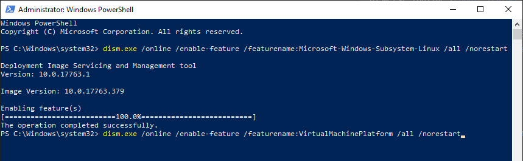
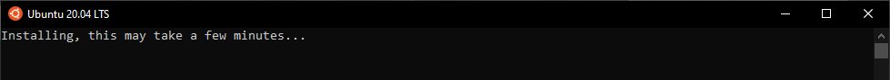
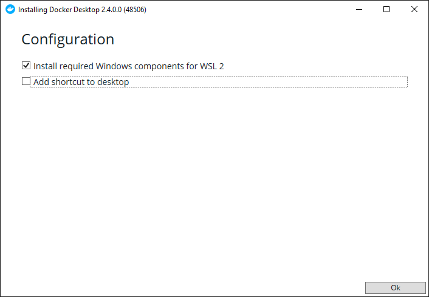

Virtual Machine & Docker Setup¶
Table of Contents¶
A typical Windows 10 installation does not include several of the tools needed to run the GridAPPS-D Platform Several software packages need to be installed prior to installing GridAPPS-D in the next step
Installation Steps:
1. Verify System Requirements¶
OS:
Windows 10, Version 2004 or higher, with Build 19041 or higher
RAM:
8GB (absolute minimum for 13 and 123 node models, may encounter memory overload during installation );
16GB (preferred for small models, minimum for 8500/9500 node models);
32GB (recommended for application development)
Disk Space:
15GB required for installation
Note: The download size is quite large, so it is recommended to use a fiber or ethernet interent connection, rathered than a metered hotspot to avoid excessive data usage charges.
2. Verify OS Build¶
To check your OS build, type winver in the Cortana seach bar:

Check to see if your OS is
For x64 systems: Version 1903 or higher, with Build 18362 or higher.
For ARM64 systems: Version 2004 or higher, with Build 19041 or higher.

If not, run Windows Update to get the latest verion of Windows 10 available for your machine. It may take some time for the new OS to download. Multiple restarts are typical while upgrading the windows version.
3. Install Windows Subsystem for Linux¶
GridAPPS-D and the associated docker containers will run using the Windows Subsystem for Linux (WSL), which is a new feature to Windows 10 that enables linux code to run natively in Windows without a separate virtual machine. The steps in this section are also available on the Microsoft website
3.1. Enable WSL¶
Open Windows PowerShell as an administrator:

Enable WSL by entering
dism.exe /online /enable-feature /featurename:Microsoft-Windows-Subsystem-Linux /all /norestart

Then, without restarting, enable the virtual machine platform by entering
dism.exe /online /enable-feature /featurename:VirtualMachinePlatform /all /norestart

When completed, restart your machine. It may take a few minutes for the new settings to be applied while restarting.
3.2. Upgrade to WSL2¶
Download the latest WSL2 package .msi installer from the Microsoft repository
Run the update package to install WSL2 using the wizard:

Open Windows PowerShell again and update the settings to use WSL2 by entering
wsl --set-default-version 2
3.3. Install Linux Ubuntu OS¶
Open the Microsoft Store app, and search for Ubuntu and install the desired version (available versions are 16.04, 18.04, and 20.04)

When it has finished downloading, click Launch.

3.4. Set up Ubuntu in WSL¶
Wait for the Ubuntu OS to install.

Select a username and password. These do not need to be the same as your Windows or Microsoft Account login.

4. Install Docker for Windows¶
Download and run Docker Desktop for Windows from Docker Hub
Be sure to select “Install required components for WSL2”

After restarting your machine, Docker should start automatically, and you will see a notification stating “Linux WSL2 containers are starting”